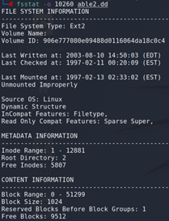

- Seminarie
Federale Gerechtelijke Politie: Forensics in practice
-

11 januari 2023

Hogeschool PXL, Campus Elfde-Linie

3u
Op 11 januari 2023 hebben de studenten in het laatstejaarstraject van de bacheloropleiding Toegepaste Informatica bij Hogeschool PXL een seminarie kunnen volgen dat werd georganiseerd en gehouden door de Federale Gerechtelijke Politie van België. In dit seminarie, gehouden door Alexander Bijnens, Hoofdinspecteur met een Bijzondere Specialisatie in de ICT bij de Federale Gerechtelijke Politie te Limburg, kregen de deelnemende studenten een erg uitgebreide sessie over het toepassen van digitaal forensisch onderzoek.
Het seminarie vond plaats in een leslokaal op de Campus Elfde-Linie van Hogeschool PXL. De studenten kregen de keuze om vrijwillig deel te nemen aan dit evenement.
Tijdens dit seminarie, waarvoor verwacht werd dat de studenten al over enige voorkennis beschikken betreffende digitale beveiliging, werd er dieper ingegaan op het maken van forensische kopieën van gevoelige data, informatie betreffende bestandssystemen, bestandssystemen recupereren, zoeken naar bestanden die op het systeem gewist zijn, de interactie tussen de hardware en de systeemkernel en nog veel meer.
Terwijl het vergaren van nieuwe informatie het primaire doel was van dit seminarie kregen de studenten ook de kans om tijdens het seminarie gelijktijdig digitaal op de eigen laptop te volgen en dezelfde stappen uit te voeren als de gastspreker maar dit was optioneel. Verscheidene studenten hebben ervoor gekozen om op dat moment aandachtig de stappen en uitleg van de gastspreker te volgen in plaats van te multitasken.
Aan het begin van het seminarie gaf Alexander Bijnens, de gastspreker, een korte maar zeer specifieke uitleg over de link tussen de hardware van een computersysteem en de kernel. Tijdens dit specifiek seminarie werd hier vooral de aandacht gericht op de UNIX- en Linux-kernels. Hierbij werd de link tussen forensisch onderzoek op digitale platformen en het Linux-systeem verklaard; Linux-systemen zijn open source en daarom ook veel interessanter voor digitaal forensisch onderzoek. Toch kan men in de praktijk, zelfs bij de Federale Gerechtelijke Politie van België, heel wat Windows-systemen vinden waarop vooral commerciële software gebruikt wordt.
Aangezien het seminarie ook een sterke aandacht richt op het recupereren van bestanden, zelfs verwijderde files, werd er hiervoor eerst in het tweede hoofdstuk van het seminarie uitleg gegeven over de verschillende soorten bestandssystemen die er bestaan. Terwijl een deel hiervan al eerder gekende informatie is vanuit de lessen uit voorgaande trajectjaren van de opleiding bij Hogeschool PXL, was het toch handig om de link hiervan met forensisch onderzoek ook duidelijk uitgelegd te krijgen.
Eenmaal de eerder theoretische informatie uitgelegd was, is de gastspreker van gang gegaan met de introductie van het Kali Linux-systeem, een operating system dat in het voorgaande trajectjaar ook al kort was aangehaald tijdens de lessen van het vak Security Advanced. Tijdens dit seminarie werd het Kali-systeem gebruikt via een virtuele machine in VMWare of VirtualBox; deze keuze was aan de studenten.
Tijdens het daaropvolgende en meer praktische deel van het seminarie gaf de gastspreker verschillende live demonstraties met bijkomende uitleg over het gebruik van het Kali-systeem en de daarbijhorende methodes om data en files te recupereren. Via verscheidene commando’s werd dit diepgaand uitgelegd, inclusief de bestandsstructuren en hoe deze te herkennen zijn tijdens het gebruik van het Kali-systeem en de uitgelegde commando’s. Ook het proces van “data carving” werd hierbij live voorgedaan met demodata.

Bij het onderdeel over “data carving” kregen de studenten uitleg over fileheaders en “magic numbers” die via de “raw data” te herkennen zijn en waardoor het voor specialisten zoals Alexander Bijnens ook mogelijk is om zelfs vanuit deze ongeordende data bestanden zoals afbeeldingen terug te recupereren.
Na het onderdeel van dit seminarie in het Kali-systeem kregen de studenten ook nog een live demonostratie en uitleg over een toolkit, specifiek The Sleuth Kit, dat specialisten zoals de gastspreker in staat stelt om op een erg snelle en efficiënte manier aan “data carving” te doen op een meer geautomatiseerde manier. Deze toolkit wordt achterliggend ook door het softwarepakket Autopsy gebruikt.
Na afloop van het seminarie kregen de studenten tevens ook de kans om de gastspreker algemene vragen stellen, zowel over forensisch onderzoek als het algemene werk en zijn persoonlijke ervaring bij de Federale Gerechtelijke Politie van België.
Terugkijkend op dit seminarie ben ik blij dat ik dit seminarie heb gevolgd. Security is één van de vele aspecten binnen de IT-wereld die me altijd al hebben geïnteresseerd. Met de steeds vaker voorkomende gevallen van cybercriminaliteit zowel op nationaal als internationaal niveau is een topic als dit ook al maar vaker van groot belang. Dit valt ook te merken in de diepgang van de gastspreker tijdens dit seminarie.
Opvallend is ook dat veel verschillende elementen tijdens dit seminarie erg herkenbaar waren met de informatie die de studenten, waaronder ook ikzelf, geleerd hebben in de twee voorgaande trajectjaren tijdens de vakken Security Essentials en Security Advanced. Vooral tijdens Security Advanced, een vak dat naar mijn eigen zeggen eerder leek te focussen op de noden van de bedrijfssector en niet op overheidsinstanties, zijn er heel wat herkenbare elementen. Zo werd er tijdens dit seminarie bijvoorbeeld een live demonstratie gegeven over het proces van “data carving”, iets waar ik gelukkig tijdens het vak Security Advanced al de kans heb gehad mee in aanraking te komen. Als studenten van dat vak dacht ik eerder dat zulke processen een zeldzaamheid zijn in reële en praktische omgevingen maar dit seminarie van de Federale Gerechtelijke Politie heeft het tegendeel bewezen. Dat is iets dat mij zeker bij blijft.
Daarnaast was ook het gesprek dat ik persoonlijk gehad heb, samen met een tweetal andere studenten, met de gastspreker er leerrijk. Hierin heb ik persoonlijk wat kunnen netwerken met de gastspreker en informatie kunnen vergaderen over het aanwervingsproces bij de Federale Gerechtelijke Politie van België, specifiek met oogmerk om in een gelijkaardige positie te treden. Terwijl dat zeker niet mijn enige interesse is, is het zeker wel een mogelijke toekomstroute die ik voor mijzelf inzie. Tijdens dit eerder persoonlijk gesprek kwamen ook enkele andere technische zaken op die mij een beter en meer volledig beeld hebben gegeven van het functioneren van de Federale Gerechtelijke Politie, en daarnaast ook enkele technische limieten.
Toekomstgericht zie ik dit seminarie als een verrijking van mijn kennis betreffende het securityaspect binnen de IT-wereld, specifiek met aandacht voor de wetgeving en gerechtelijk onderzoek. Dat lijkt voor veel studenten misschien eerder als iets dat niet echt voor hen van toepassing is maar persoonlijk zie ik dit als één van de vele kansen en mogelijkheden die ik heb, zeker aangezien het een grote interesse van mij is. Daarnaast heb ik ook mijn sociale netwerksoftskills kunnen verbeteren, iets waar ik in de toekomst zeker nog meer aan ga proberen te werken via bijvoorbeeld het PXL-Jobevent aangezien ik op dat vlak nog veel groeikansen heb.